Part 1 finds the shortest distance from a point to a curve. Part 2 fits a line and a parabola to four points by minimising the mean squared error (MSE). Each part is solved analytically and numerically, by hand and in Python.
Files:
The distance from a point (x0, y0) to a point (x, f(x)) on the curve is d = √((x − x0)2 + (f(x) − y0)2). The square root is increasing, so the x that minimises d also minimises the squared distance, which is easier to work with:
D(x) = (x − x0)^2 + (f(x) − y0)^2 D'(x) = 2(x − x0) + 2(f(x) − y0) f'(x) D''(x) = 2 + 2 f'(x)^2 + 2(f(x) − y0) f''(x)With f(x) = x2 + 5, f'(x) = 2x and y0 = 0 for all five points, setting D'(x) = 0 gives
(x − x0) + (x^2 + 5)(2x) = 0 ⇒ 2x^3 + 11x − x0 = 0D''(x) = 12x2 + 22 > 0 for every x, so this cubic has exactly one real root and that root is the global minimum. Dividing by 2 gives the depressed cubic x3 + px + q = 0 with p = 5.5 and q = −x0/2, whose real root is given by Cardano's formula:
x* = cbrt(x0/4 + √Δ) + cbrt(x0/4 − √Δ), Δ = x0^2/16 + (11/6)^3The distance is then d = √D(x*). Geometrically, D'(x) = 0 means the line from the point to the curve is perpendicular to the curve's tangent.
Algorithm A: Newton-Raphson. Newton's method finds the root of D'(x) = 0, starting from x(0) = 0:
x(n+1) = x(n) − D'(x(n)) / D''(x(n)), stop when |x(n+1) − x(n)| < 1e-7Algorithm B: Golden-section search. Golden-section search only needs D(x) and an interval [a, b] that contains the minimum. From 2x3 + 11x = x0, |x*| ≤ |x0|/11 < 1 for all five points, so [−2, 2] is a safe interval. Each iteration places two probes and keeps the side with the smaller D:
x1 = a + r(b − a), x2 = b − r(b − a), r = 2 − φ = 0.382, stop when |b − a| < 1e-7Both algorithms are coded as given in the assignment. The only change is a list that records each iteration for the plots.
| Point | Analytical x* | Newton x* | Newton d | Newton iterations | Golden x* | Golden d | Golden iterations |
|---|---|---|---|---|---|---|---|
| (0, 0) | 0.0000000 | 0.0000000 | 5.0000000 | 1 | 0.0000000 | 5.0000000 | 37 |
| (−4, 0) | −0.3554697 | −0.3554697 | 6.2898454 | 4 | −0.3554697 | 6.2898454 | 37 |
| (−8, 0) | −0.6720781 | −0.6720781 | 9.1334195 | 5 | −0.6720781 | 9.1334195 | 37 |
| (2, 0) | 0.1807446 | 0.1807446 | 5.3513964 | 4 | 0.1807446 | 5.3513964 | 37 |
| (6, 0) | 0.5199037 | 0.5199037 | 7.6031254 | 4 | 0.5199037 | 7.6031254 | 37 |
All three methods agree to 7 decimal places. The hand calculations for these points are in the hand solutions.
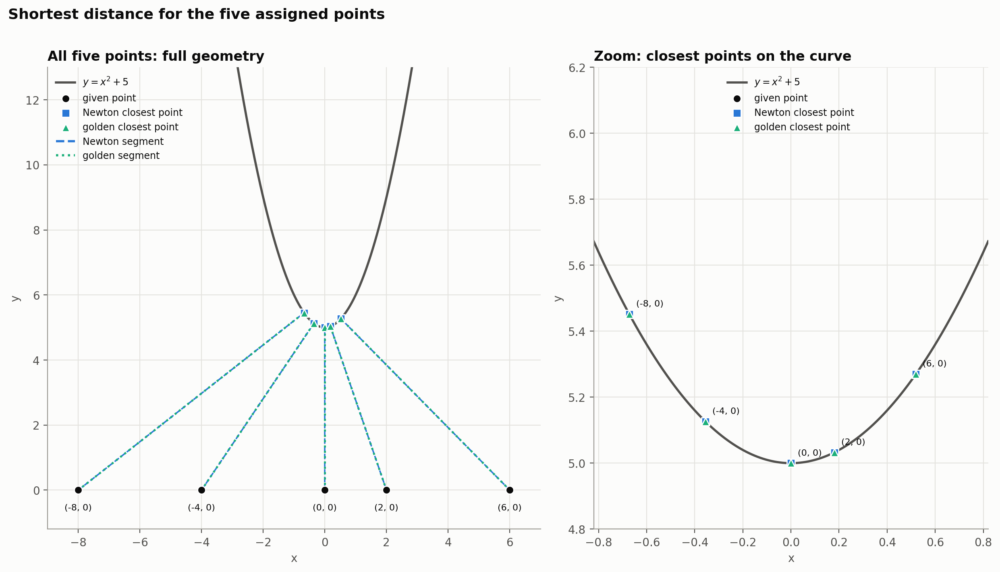
Figure 1. The shortest segment from each point to y = x2 + 5. The right panel zooms in on the closest points, where the Newton and golden-section answers sit on top of each other.
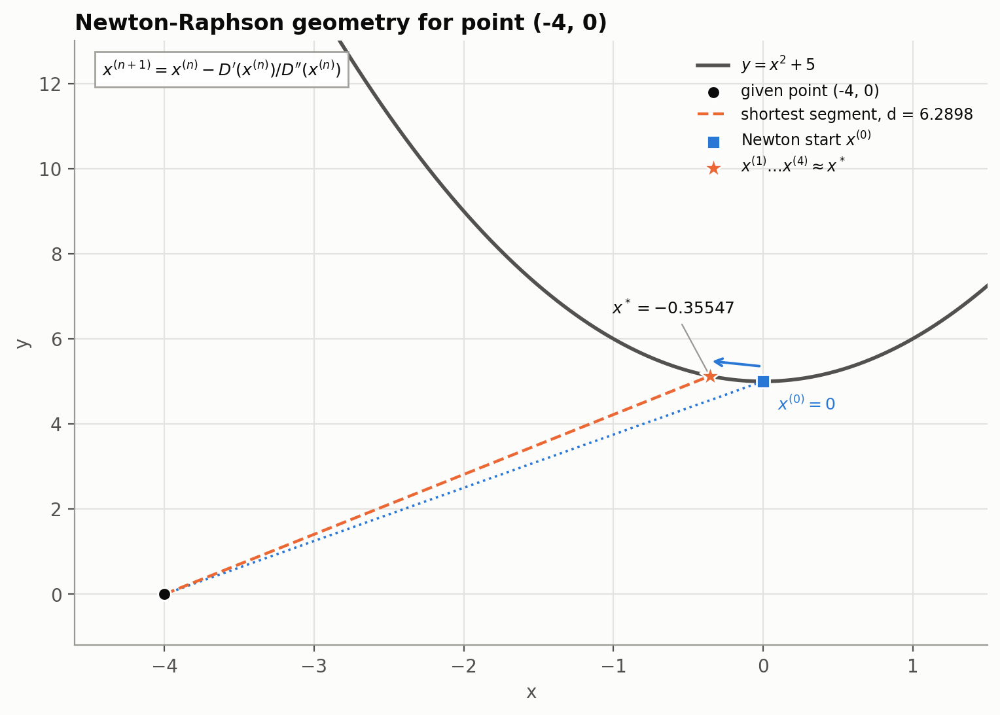
Figure 2. Newton-Raphson starts at x(0) = 0. The first step already lands within 0.01 of x* = −0.35547, so iterations 1 to 4 overlap on the curve.
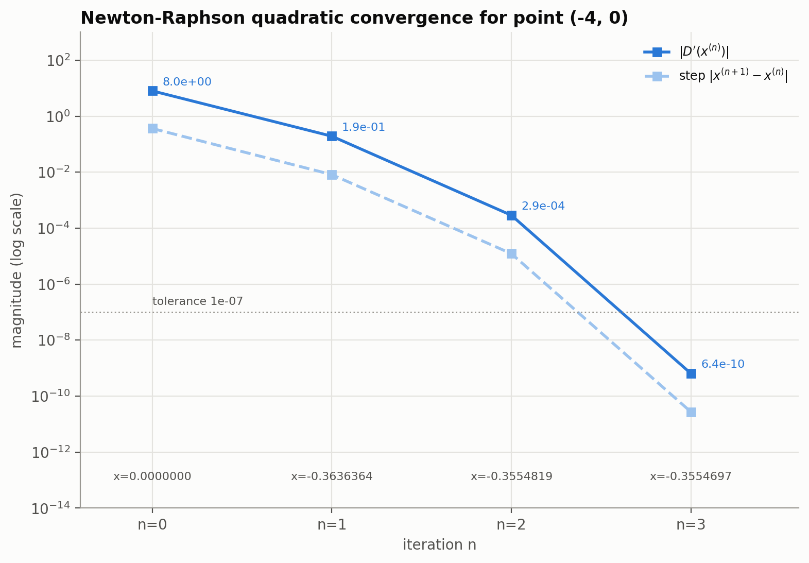
Figure 3. |D'(x)| and the step size on a log scale. |D'| falls from 8 to 0.19, 2.9e-4 and 6.4e-10, so the number of correct digits roughly doubles each iteration. This is quadratic convergence.
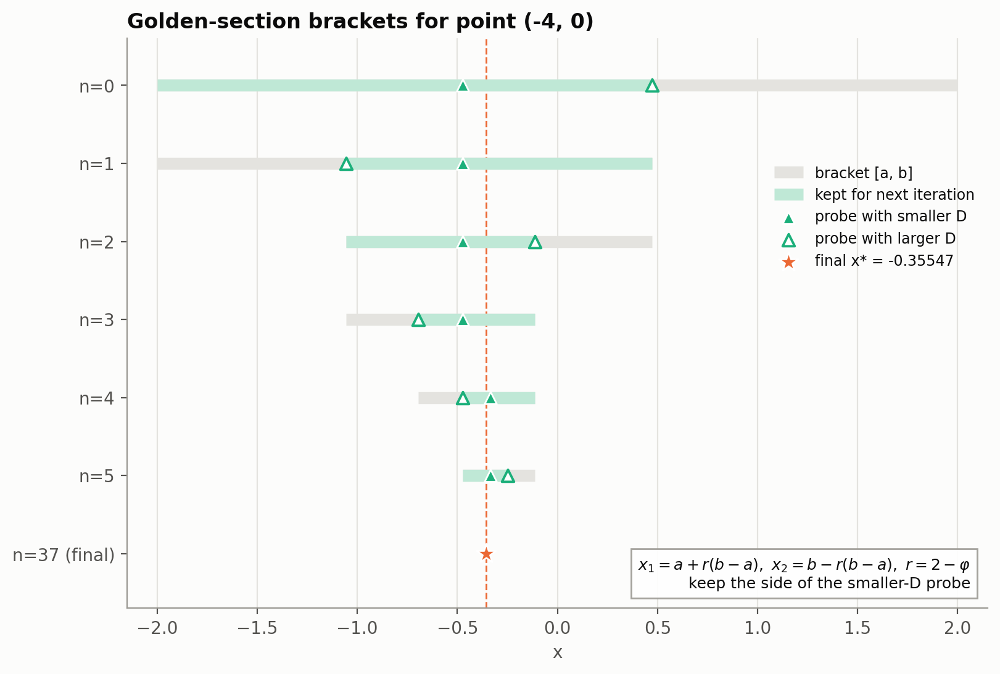
Figure 4. The first six golden-section brackets. The filled triangle is the probe with the smaller D, and the green part is the interval kept for the next iteration. After 37 iterations the bracket has shrunk to the final x*.
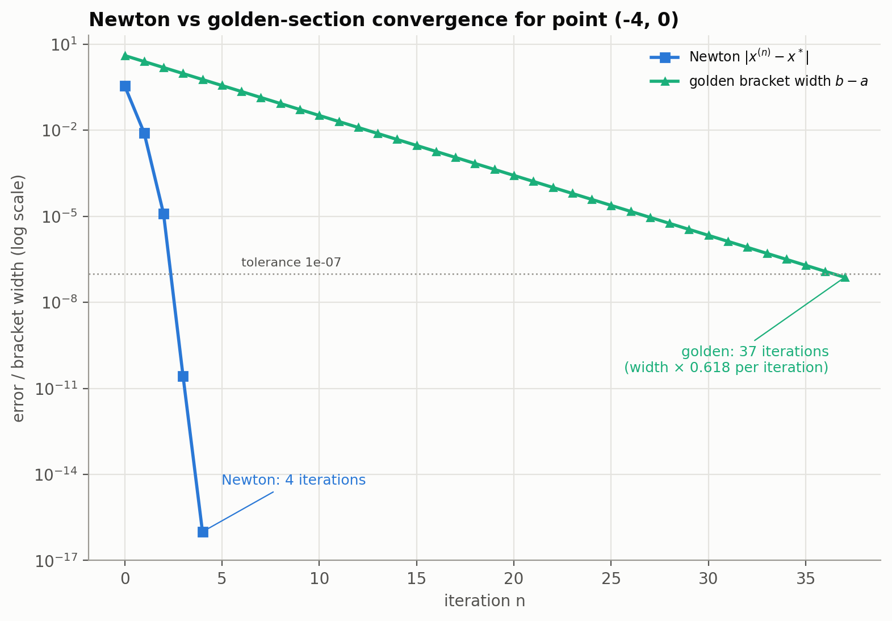
Figure 5. Newton's error against the golden-section bracket width. Golden section shrinks the interval by a constant factor of 0.618 per iteration (linear convergence), so it needs 37 iterations. Newton needs only 4.
Comparison. Newton-Raphson is much faster, but it needs f'(x), f''(x) and a good starting guess. Golden section is slower but only needs D(x) and an interval that contains the minimum, so it is more robust. The number of golden-section iterations depends only on the starting interval and the tolerance: 4 × 0.618n < 10−7 gives n = 37 for every point.
The same code works for any curve if f, f' and f'' are passed in. For these curves, D(x) can have more than one critical point, so the code first evaluates D on a coarse grid over the domain. Newton starts from the best grid point, and golden section searches the grid cell around it.
| Curve | Point | Newton x* | Newton d | Golden x* | Golden d |
|---|---|---|---|---|---|
| Exponential y = ex | (1, 0) | 0.0000000 | 1.4142136 | 0.0000000 | 1.4142136 |
| Logarithmic y = ln x | (0, 0) | 0.6529186 | 0.7797671 | 0.6529186 | 0.7797671 |
| Reciprocal y = 1/x (variable in the denominator) | (0, 0) | 1.0000000 | 1.4142136 | 1.0000000 | 1.4142136 |
| Radical y = √x | (4, 0) | 3.5000000 | 1.9364917 | 3.5000000 | 1.9364917 |
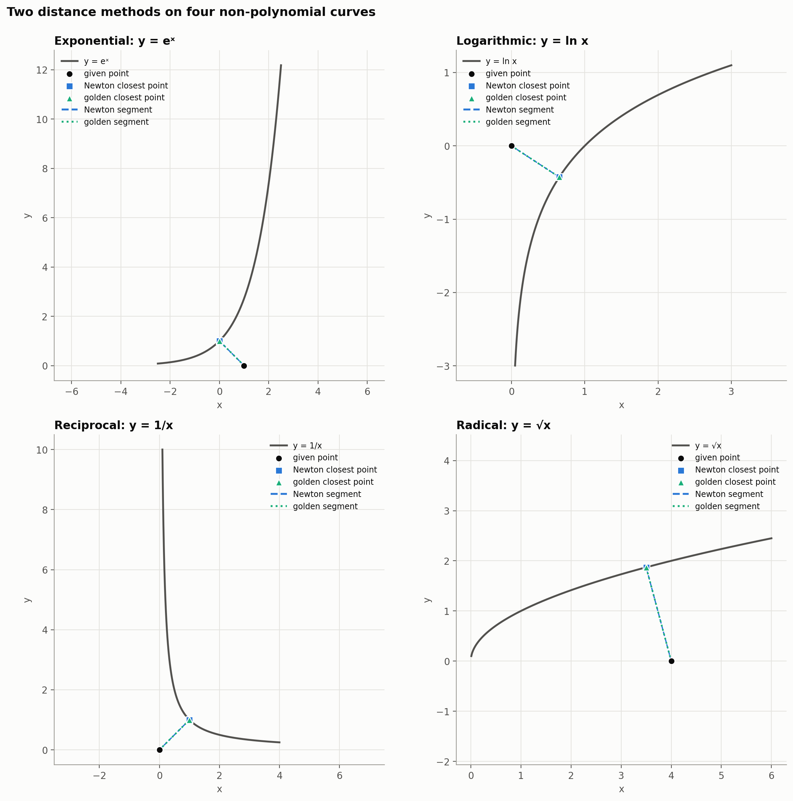
Figure 6. Both methods on four non-polynomial curves. In each case the segment from the point meets the curve at a right angle.
Data: (0, 0.5), (2, 3.5), (1, 1.5), (3, 7.5), so N = 4.
MSE = (1/N) Σ (y_fit(x_i) − y_i)^2MSE function:
MSE(c0, c1) = (1/4) Σ (c0 + c1 x_i − y_i)^2 = c0^2 + 3 c0 c1 + 3.5 c1^2 − 6.5 c0 − 15.5 c1 + 17.75Analytical solution. Setting both partial derivatives to zero gives the normal equations ATA c = ATy, where each row of A is [1, xi]:
[ 4 6 ] [c0] [13] [ 6 14 ] [c1] = [31] ⇒ c0 = −0.2, c1 = 2.3Numerical solution: Newton-Raphson, one parameter at a time. Starting from c0 = c1 = 0, each iteration first updates the slope with the intercept held fixed, then updates the intercept using the new slope. Because the MSE is quadratic in each parameter, each single-parameter Newton step θj ← θj − gj/Hjj lands exactly on the best value of that parameter:
c1 ← (15.5 − 3 c0) / 7 c0 ← (6.5 − 3 c1) / 2This repeats until no parameter changes by more than 1e-7. The line converges in 32 iterations.
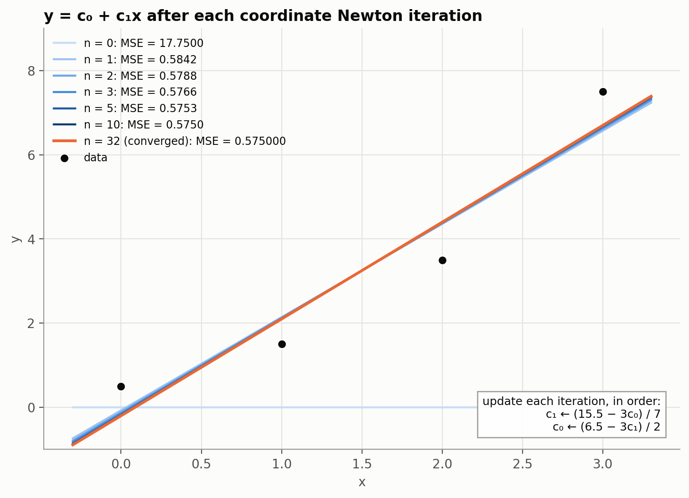
Figure 7. The line after each Newton-Raphson iteration. Light blue is early and dark blue is later. Orange is the converged line.
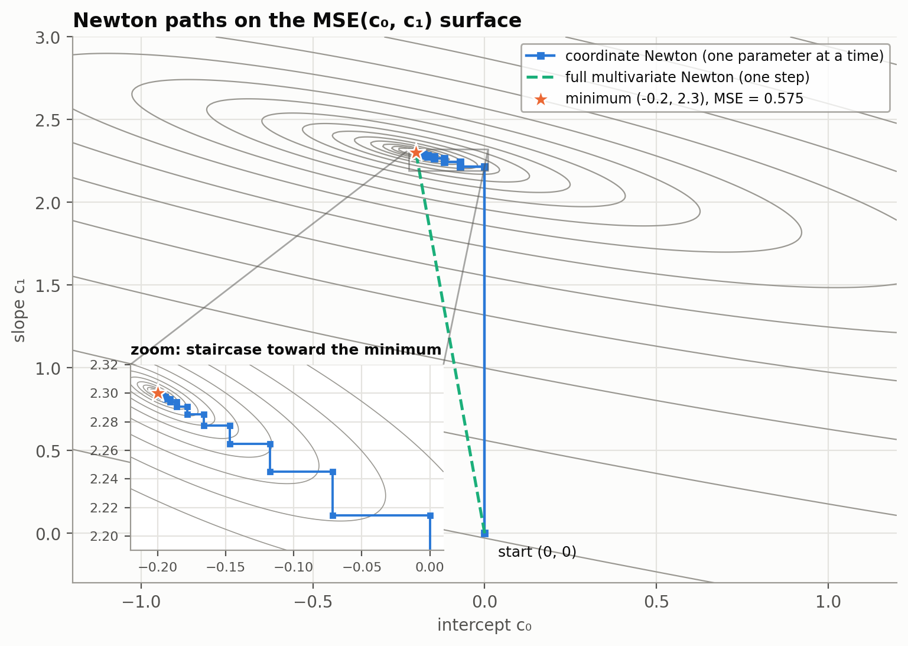
Figure 8. The path on the MSE(c0, c1) contours. Updating one parameter at a time gives a staircase of horizontal and vertical moves. One full multivariate Newton step (both parameters at once) goes straight to the minimum, because the MSE is quadratic.
MSE function:
MSE(B, C, D) = (1/4) Σ (B x_i^2 + C x_i + D − y_i)^2Analytical solution. Each row of A is [xi2, xi, 1]:
[ 98 36 14 ] [B] [83] [ 36 14 6 ] [C] = [31] ⇒ B = 0.75, C = 0.05, D = 0.55 [ 14 6 4 ] [D] [13]Numerical solution: Newton-Raphson, one parameter at a time, in the order B, C, D:
B ← (41.5 − 18 C − 7 D) / 49 C ← (15.5 − 18 B − 3 D) / 7 D ← (6.5 − 7 B − 3 C) / 2Starting from B = C = D = 0, the parabola converges in 276 iterations.
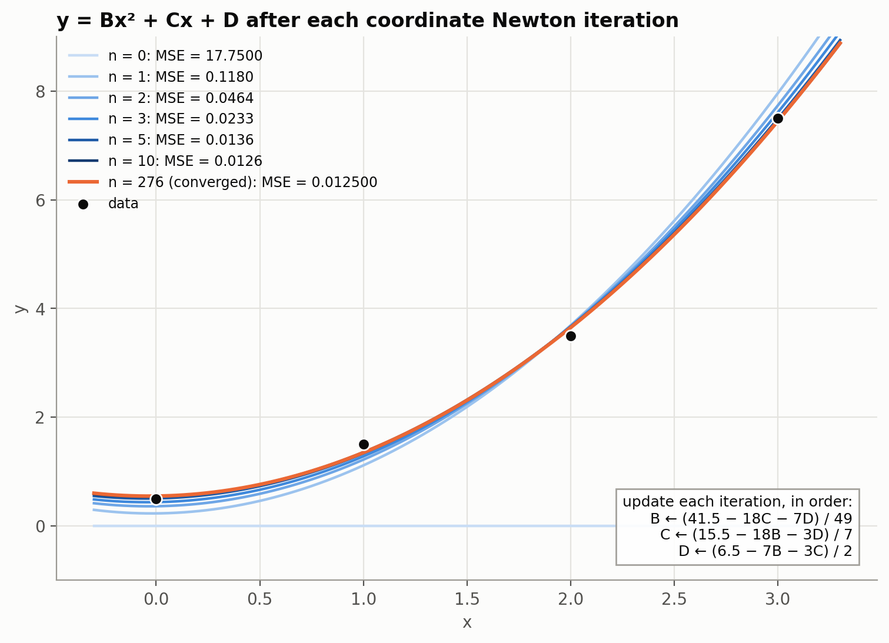
Figure 9. The parabola after each Newton-Raphson iteration. The curve is close to the final fit after about 5 iterations.
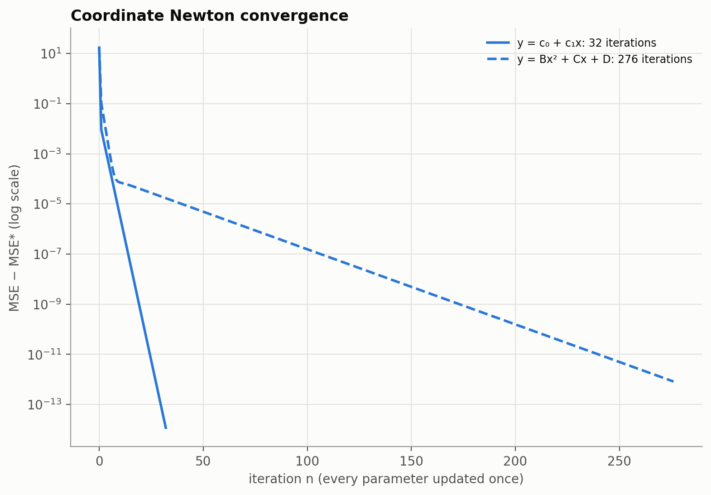
Figure 10. MSE − MSE* after each iteration. Both fits converge linearly, but the parabola converges much more slowly.
Why the parabola needs more iterations. For x = 0 to 3, the x2 and x columns of A are strongly correlated (the off-diagonal terms 36 and 14 are large compared with the diagonal). A change in B is mostly undone by the next change in C, so each one-parameter step only makes a small net improvement. The line has only one such coupling term, so it converges faster. A full multivariate Newton step updates all parameters together and reaches the exact answer in one step for both models.
| Model | Fitted function | MSE | Newton-Raphson iterations |
|---|---|---|---|
| Line | y = −0.2 + 2.3x | 0.575 | 32 |
| Parabola | y = 0.75x2 + 0.05x + 0.55 | 0.0125 | 276 |
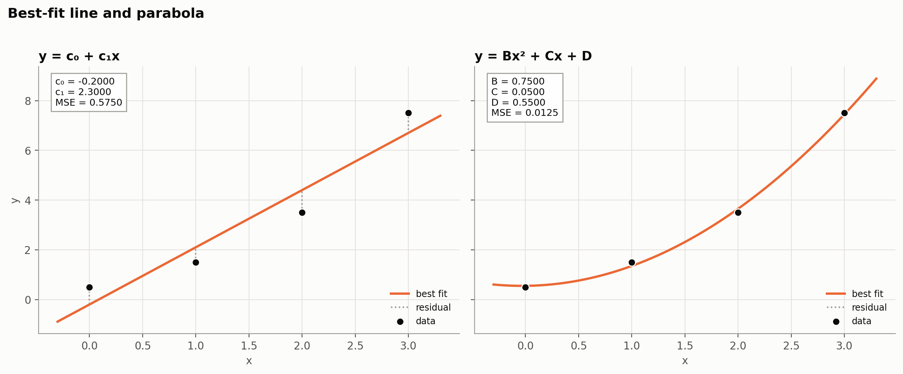
Figure 11. The best-fit line and parabola. The dotted lines are the residuals.
The parabola's MSE is about 46 times smaller than the line's. For the line, the data points at x = 0, 1, 2, 3 fall above, below, below and then above the line. That pattern shows the data is curved, so the parabola is the better model. With 4 points and 3 parameters, the parabola has only one degree of freedom left, so some of its improvement comes simply from having one more parameter.